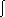
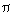

Difference Equations
and
Recursive Relations
1750-1799
Difference Equations and Recursive Relations in this period have been studied
by several mathematicians. Some of these mathematicians include:
Farey,
Gauss,
Gompertz,
Legendre,and
Parseval.
Farey Series
The Farey series FN is the set of all fractions
between 0 and 1 written in lowest terms. The denominators do not exceed
N ( where N is the order of the series) and they are arranged in order of
magintude. In 1816, Farey published a statement in which he declared that
the middle of any three successive terms in the Farey series is the mediant
of the other two. It was Cauchy who eventually supplied the proof of
this statement.
A proof of this statement is as follows:
Start with F1 which is 0/1, 1/1. In order
to getF2, insert the mediant into F1:
0/1, 1/2,1/1.
For F3 we add two mediants: 0/1,1/3,1/2,2/3,1/1.
To getF4 we also addonly 2 fractions: 0/1,1/4,1/3,1/2,2/3,3/4,1/1.
Next, add 4 fractions to get F5:0/1,1/5,1/4,1/3,2/5,1/2,3/5,2/3,3/4,4/5,1/1.
The general rule is this: to move from FN-1 to F
N add all possible mediants (that come out to be in the lowest
terms)with N in the denominator. Since forming a mediant may only increase
thedenominator we are led to think that following this rule we indeed will
getthe wholeof FN. To complete the proof we refer to the
Stern-Brocot tree which contains all positive fractions.
So in the processof constructing a Farey series no fraction will be missed.
When N is prime, the rule adds N-1 fractions. In general,  (N) fractions are added. For all reducible fractions m/N will have appeared
in one of the earlier series.
(N) fractions are added. For all reducible fractions m/N will have appeared
in one of the earlier series.

The Farey series is important in the
proof of a corollary of Euclid's algorithm. The algorithm is as follows:
For integers m and n with gcd(m,n) = 1 and m n, there exist positive integers a and b such that ma - nb = 1. The proof
relies on the properties of the Stern-Brocot
tree. For any two consecutive fractions m1/n1
andm2/n2 in the Farey series, m2n1
- m1n2 = 1. So, depending on whether m or nis larger,
locate either m/n or n/m in a Farey series and select (as a/b)either thepreceding
or the following fraction.
n, there exist positive integers a and b such that ma - nb = 1. The proof
relies on the properties of the Stern-Brocot
tree. For any two consecutive fractions m1/n1
andm2/n2 in the Farey series, m2n1
- m1n2 = 1. So, depending on whether m or nis larger,
locate either m/n or n/m in a Farey series and select (as a/b)either thepreceding
or the following fraction.
Gauss and the Gamma Function
The logarithm can be defined by and integral. The
gamma function can also be defined by an integral, but in a different way.
It is:
G(x)= 
s
x-1
e
-s ds for 0<x< .
.
The integral converges because the exponential makes it
small as s->
. As s->
0, the factor s^
x-1 is integrable because x>0.
The gamma function is a generalization of the factorial. In fact,
it has the following properties:
G(x+1)=xG(x).
G(n+1)=n! , if n is a positive
integer.
G(1/2)=sqrt
Another useful identity with respect to the gamma function is:
G(x)= (2x-1)/(sqrt
)
G(x/2)G(x+1/2).
This can be used to give another derivation of the gamma
function on the "half-integers."
The formula for the surface area of the sphere of radius R in
n dimensions
is:
An =( 2
n/2 Rn-1)/ G (n/2).
The Gompertz growth law has been shown to provide a good
fit for the growth data of numerous tumors. It can be described by
the following system of differential equations:
Let V(t) measure the size of the tumor (e.g. volume, number, etc.)
dV/dx = r(t)V(t), V(0) =V0
dr/dx = alpha r(t), r(0) = beta
Here r(t)= tumor growth,
alpha= retardation constant,
beta= initial growth or regression rate.
The sign of beta determines where the tumor grows or regresses. The
solution is given by:
V(t) = V0 e